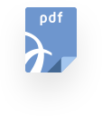

{% extends "subpage.tmpl" %} {% block content %}
<h3 class="h3--media_title">
    Clinical Studies
</h3>
<div class="b_media_wrapper">
    {% for elem in studies %}
    <div class="b_media__element">
        <a href="javascript:gui.Shell.openItem(clicnicalStudies + '{{elem.src}}');" class="b_media__href"></a>
        <div class="b_media__icon">
            
        </div>
        <div class="b_media__description">
            <p>{{elem.description}}
                <br>- {{elem.date}}</p>
        </div>
    </div>
    {% endfor %}
</div>
<a class="b_button b_button--back" href="index.html">Back</a>
<a class="b_button b_button--back b_button--browse" href="javascript:gui.Shell.openItem(clicnicalStudies)">
    Browse Files
</a>
{% endblock %}
